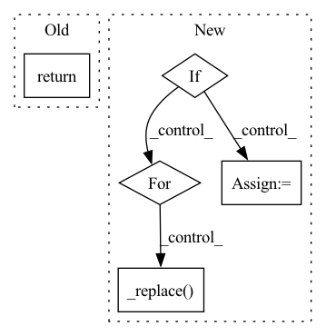

Pattern ID :22662

Before Change
name_filter: Optional[str] = None,
) -> Dict[str, List[common.InstanceTypeInfo]]:
Returns all instance types in GCP offering GPUs.
return common.list_accelerators_impl("GCP", _df, gpus_only, name_filter)
def get_region_zones_for_accelerators(
After Change
// TODO(zongheng): fix A100 info directly in catalog.
a100_infos = results.get("A100", None)
if a100_infos is not None:
new_infos = []
for info in a100_infos:
assert pd.isna(info.instance_type) and info.memory == 0, a100_infos
new_infos.append(
info._replace(
instance_type=_A100_INSTANCE_TYPES[info.accelerator_count],
memory=_A100_HOST_MEMORY[info.accelerator_count]))
results["A100"] = new_infos
return results
In pattern: SUPERPATTERN
Frequency: 3
Non-data size: 5
Instances
Fragment ID: 71511715
Project Name: skypilot-org/skypilot
Commit Name: 7efe5932472dfe698ac17c7499a9c29bcf35f26f
Time: 2022-02-16
Author: concretevitamin@users.noreply.github.com
File Name: prototype/sky/clouds/service_catalog/gcp_catalog.py
M Class Name: AnonimousClass
N Class Name: AnonimousClass
M Method Name: list_accelerators(2)
N Method Name: list_accelerators(2)
M Parent Class:
N Parent Class:
M File Name: prototype/sky/clouds/service_catalog/gcp_catalog.py
N File Name: prototype/sky/clouds/service_catalog/gcp_catalog.py
M Start Line: 57
M End Line: 57
N Start Line: 76
N End Line: 89
'>
Before Change
self.submodules = nn.Sequential(self._submodules_ordered_dict)
def forward(self, latent_graph):
return self.submodules(latent_graph)
class EncodeProcessDecode(nn.Module):
After Change
attention=attention))
def forward(self, latent_graph, normalized_adj_mat=None):
if self.stochastic_message_passing_used:
for graphnet_block in self.graphnet_blocks:
latent_graph._replace(node_features=torch.matmul(normalized_adj_mat, latent_graph.node_features))
latent_graph = graphnet_block(latent_graph)
return latent_graph
else:
for graphnet_block in self.graphnet_blocks:
latent_graph = graphnet_block(latent_graph)
return latent_graph
'>
Fragment ID: 71511711
Project Name: wwmark/meshgraphnets
Commit Name: e4e3108cc75391e9ec27d848ef92f94334e0915b
Time: 2021-11-07
Author: ruoheng.ma@gmail.com
File Name: encode_process_decode_ripple.py
M Class Name: Processor
N Class Name: Processor
M Method Name: forward(3)
N Method Name: forward(2)
M Parent Class: nn.Module
N Parent Class: nn.Module
M File Name: encode_process_decode_ripple.py
N File Name: encode_process_decode_ripple.py
M Start Line: 331
M End Line: 331
N Start Line: 332
N End Line: 343
'>
Before Change
"""
def forward(self, graph):
return self.submodules(graph)
class EncodeProcessDecode(nn.Module):
After Change
attention=attention))
def forward(self, latent_graph, normalized_adj_mat=None):
if self.stochastic_message_passing_used:
for graphnet_block in self.graphnet_blocks:
latent_graph._replace(node_features=torch.matmul(normalized_adj_mat, latent_graph.node_features))
latent_graph = graphnet_block(latent_graph)
return latent_graph
else:
for graphnet_block in self.graphnet_blocks:
latent_graph = graphnet_block(latent_graph)
return latent_graph
"""
'>
Fragment ID: 71511708
Project Name: wwmark/meshgraphnets
Commit Name: 2e65d2b0e36033a5a2a0ddcb73d7601635f223ba
Time: 2021-11-21
Author: ruoheng.ma@gmail.com
File Name: encode_process_decode.py
M Class Name: Processor
N Class Name: Processor
M Method Name: forward(3)
N Method Name: forward(2)
M Parent Class: nn.Module
N Parent Class: nn.Module
M File Name: encode_process_decode.py
N File Name: encode_process_decode.py
M Start Line: 182
M End Line: 182
N Start Line: 232
N End Line: 242